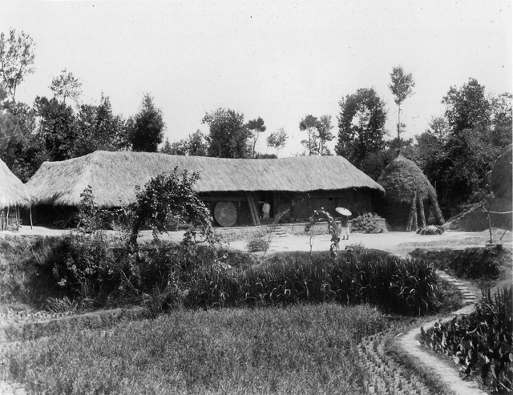

Generation 1of 4
The great-grandfather, born 1910
Li Hanqing 李翰卿
My great-grandfather was born in 1910, a year before the revolution that ended two thousand years of imperial rule. The news of a republic changed little in the villages of Taoyuan. The countryside still ran on small family farms, and order was kept by local gentry and by the clans.
His parents had built up some property through hard work and careful spending. That head start, and a country that was slowly opening, let him do what his parents could not: he went on to higher education. He came back with new ideas about running an estate and the means to act on them.
The family’s holdings grew, mostly in farmland, and the Li household became one of the known landlord families of the area. Between the late 1930s and the late 1960s he had seven children. One son died young.
